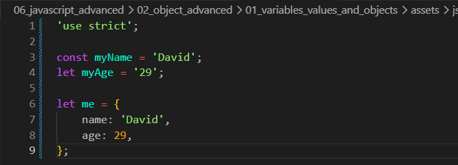
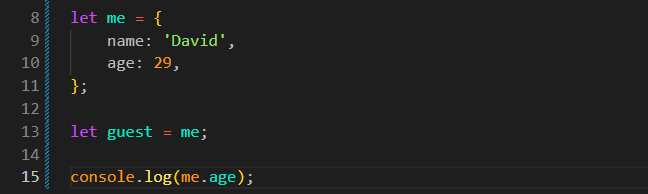
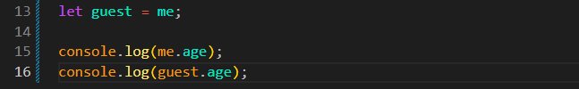
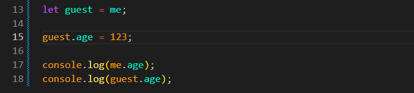

Variables, Values and Objects
Intro
Aqui iremos entender mais sobre objetos no JS.
Aqui iremos entender mais sobre objetos no JS.
JS:

Aqui iremos entender um pouco mais sobre como os dados são armazenados na memória do computador.
Para isso, criamos uma variável const myName = 'David';, outra variável let myAge = 29; e um objeto let me = { name: 'David', age: 29 };.
Podemos imaginar uma variável como uma gaveta com uma etiqueta indicando o que está armazenado dentro dela.
Um objeto é uma forma de agrupar vários valores. Podemos imaginá-lo como um armário que possui várias gavetas.
Cada objeto possui um endereço único na memória. Quando salvamos um objeto em uma variável, ela guarda apenas esse endereço, e não o objeto inteiro. Isso ficará mais fácil de entender no exemplo de atribuição de valores.
Se tentarmos alterar o valor de const myName = 'David';, por exemplo fazendo myName = 123;, teremos um erro. Isso acontece porque uma variável declarada com const não pode receber outro valor após ser criada.
Já uma variável criada com let pode ser alterada. Por isso, podemos fazer myAge = 123;.
Quando alteramos uma variável, o JavaScript localiza esse valor na memória e o substitui pelo novo valor informado.
Também podemos copiar o valor de outra variável, por exemplo: myAge = myName;. Nesse caso, o valor armazenado em myName é copiado para myAge, substituindo o valor anterior.
Se fizermos let guest = me;, criaremos uma nova variável que receberá o mesmo endereço do objeto me. Isso significa que guest e me passam a apontar para o mesmo objeto na memória.
Para entendermos melhor iremos usar o console.log:

Dessa forma, teremos como resultado no console o valor 29, pois estamos acessando a propriedade age do objeto me utilizando a notação de ponto (.). Dessa forma, escrevemos: console.log(me.age).
Com isso se fizermos agora da seguinte forma: console.log(guest.me) iremos obter o mesmo resultado.

Se decidirmos alterar o valor de guest.age como: guest.age = 123;

Apos fazermos isso, ambos os valores recebidos anteriormente alterados, onde antes tinhamos 29, agora iremos receber o 123.
A variável guest guarda o mesmo endereço do objeto me. Podemos imaginar que as duas possuem a chave do mesmo armário. Quando o JavaScript altera um valor dentro desse armário, tanto guest quanto me mostrarão a alteração, pois ambas acessam o mesmo objeto.